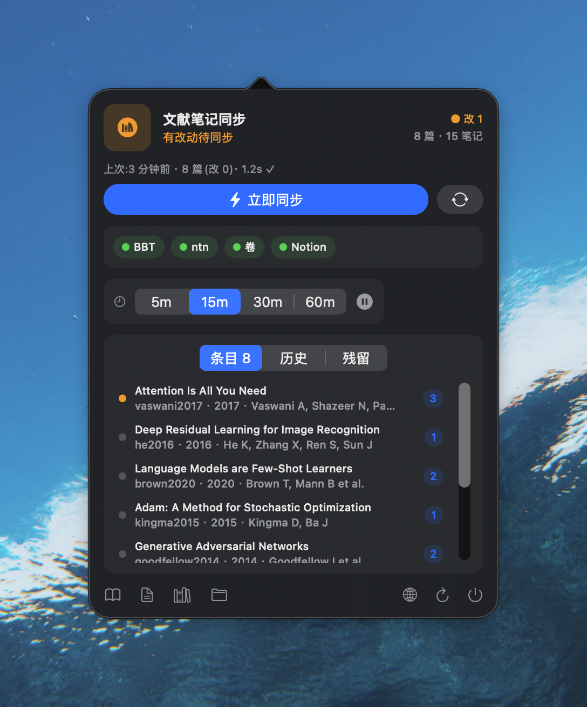
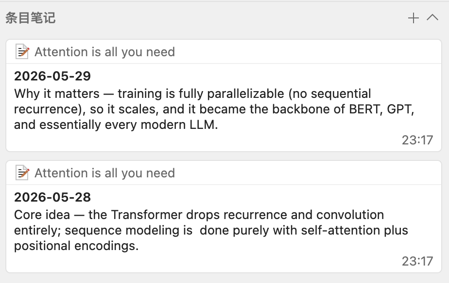
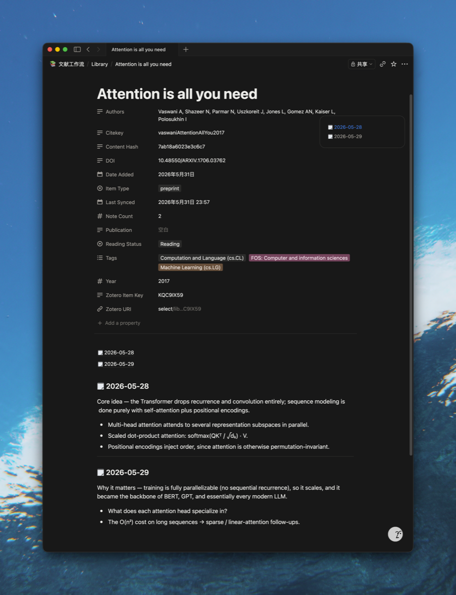

Mirror your Zotero into Notion — cleanly. 把 Zotero 文献库,干净地镜像进 Notion。
One row per paper — metadata in properties, your reading notes as clean blocks, with a table of contents up top. Built on Notion's official ntn CLI, so it writes as you: no token, no integration to connect. 一篇论文一行:题录进属性,读书笔记作为干净的 block 进正文,最前面还带目录。基于 Notion 官方 ntn CLI、以你本人身份写入——免 token,不用连 integration。


Why ntncite为什么是 ntncite
The version of "Zotero → Notion" I wanted.我想要的那版「Zotero → Notion」。
One paper, one row. Each note is its own block, metadata in real properties — no injected wrapper, no duplicated dates.一篇一行。每条笔记各自成块,元数据进真实属性——无注入外壳、无重复日期。
Writes through ntn, authenticated as you. Nothing to paste, nothing to rotate.经 ntn 写入,以你本人身份认证。没有密钥要粘贴、要轮换。
Plain TypeScript. You own the schema and the pipeline — no black box.纯 TypeScript。schema 和管道都归你——没有黑盒。
Syncs both the metadata and your notes — not just citations.题录与笔记一起同步——不只是引用。
Dedupes by Zotero item key; a content hash decides create / skip / update.按 Zotero item key 去重;content hash 判断 create / skip / update。
Runs in the background via launchd — every 15 min and whenever Zotero writes.经 launchd 后台运行——每 15 分钟 + Zotero 写库时触发。
From Zotero to a clean Notion page从 Zotero 到一页干净的 Notion
Your reading, mirrored — not mangled.你的阅读,被镜像,而不是被搅乱。


How it works工作原理
One-way. Zotero is the source of truth.单向。Zotero 是唯一真理源。
Zotero (zotero.sqlite, read-only) Better BibTeX JSON-RPC (:23119) notes + item metadata ───────► citekeys │ ▼ group by paper · HTML → Markdown → Notion blocks (nesting ≤ 2) │ ▼ upsert into a Notion "Library" DB (via ntn · dedup by Zotero Item Key)
Zotero (zotero.sqlite, 只读) Better BibTeX JSON-RPC (:23119) 笔记 + 题录元数据 ───────► citekey │ ▼ 按论文分组 · HTML → Markdown → Notion blocks(嵌套 ≤ 2 层) │ ▼ upsert 进 Notion「Library」库 (经 ntn · 按 Zotero Item Key 去重)
A menu bar app to watch it一个菜单栏 App 盯着它
It only drives the CLI — no sync logic lives in the app. (Pictured at the top.)它只驱动 CLI——同步逻辑不在 App 里。(页首那张就是它。)
Quick start快速上手
macOS, with Zotero + Better BibTeX running.macOS,Zotero + Better BibTeX 开着。
# 1 · install Notion's ntn CLI, then log in (interactive — only you can) curl -fsSL https://ntn.dev | bash ntn login # 2 · clone + build the sync engine git clone https://github.com/BrooksC02/ntncite cd ntncite/cli && pnpm install # 3 · point it at Zotero, create the Notion "Library" database cp config.example.json config.json # set zoteroDataDir pnpm setup-db <notion-page-id> # a page you can edit # 4 · preview, then sync pnpm sync --dry-run pnpm sync
# 1 · 装 Notion 官方 ntn CLI,再登录(交互式,只能你本人做) curl -fsSL https://ntn.dev | bash ntn login # 2 · clone + 构建同步引擎 git clone https://github.com/BrooksC02/ntncite cd ntncite/cli && pnpm install # 3 · 指向 Zotero,创建 Notion「Library」库 cp config.example.json config.json # 填 zoteroDataDir pnpm setup-db <notion-page-id> # 一个你能编辑的页面 # 4 · 先预览,再同步 pnpm sync --dry-run pnpm sync
Full setup, flags, and the Notion schema → README. Deploying with an AI agent? → AGENTS.md. 完整安装 / 参数 / Notion schema → README。用 AI agent 部署?→ AGENTS.md。
One-way, and safe by design单向,且设计上就安全
It reads Zotero; it never writes back.它只读 Zotero;从不回写。
Source of truth唯一真理源
Zotero is the truth. The tool reads it read-only and never writes back — no reverse sync, ever.Zotero 为准。脚本只读、从不回写——永远不做反向同步。
No stored secret不存密钥
Writes through ntn as you. ntncite holds no Notion token — config.json carries an id, not a credential.经 ntn 以你本人身份写入。ntncite 不存 Notion token——config.json 里是 id,不是凭据。
Reading Status is yoursReading Status 归你
The one field the sync never overwrites. The page body is rewritten from Zotero — treat it as read-only.唯一同步永不覆盖的字段。正文按 Zotero 重渲染——当它只读就好。
Conflicts resolve to Zotero, no merge — full Sync semantics & trust model. 冲突一律以 Zotero 为准、不合并——完整 同步语义 与 信任模型。